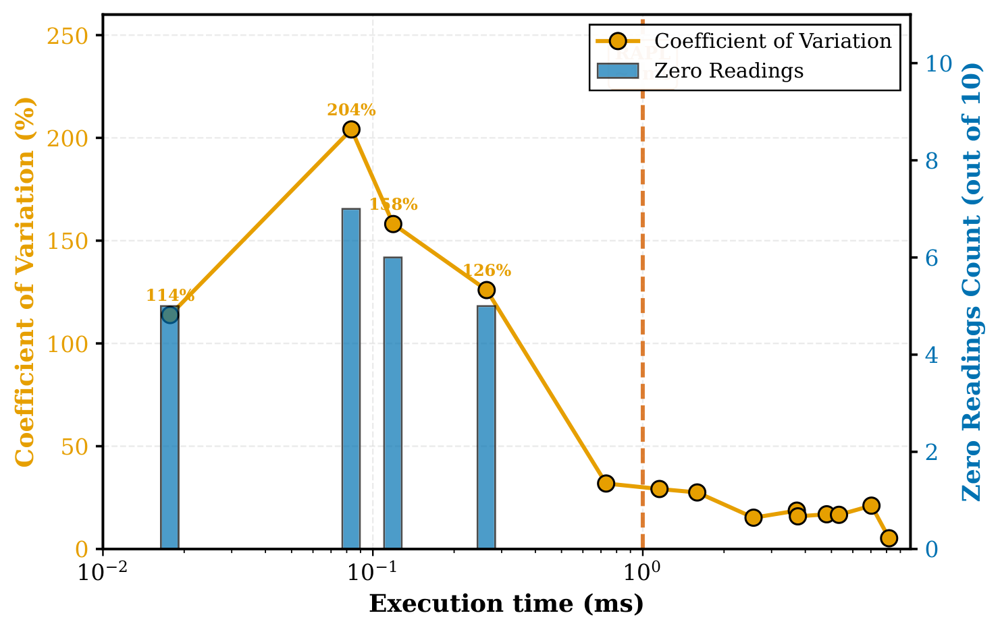
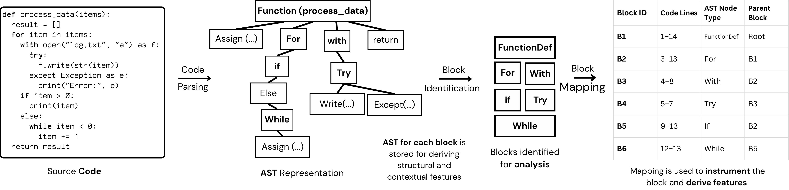
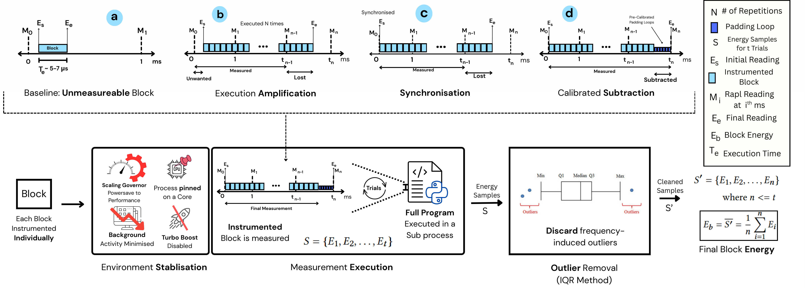
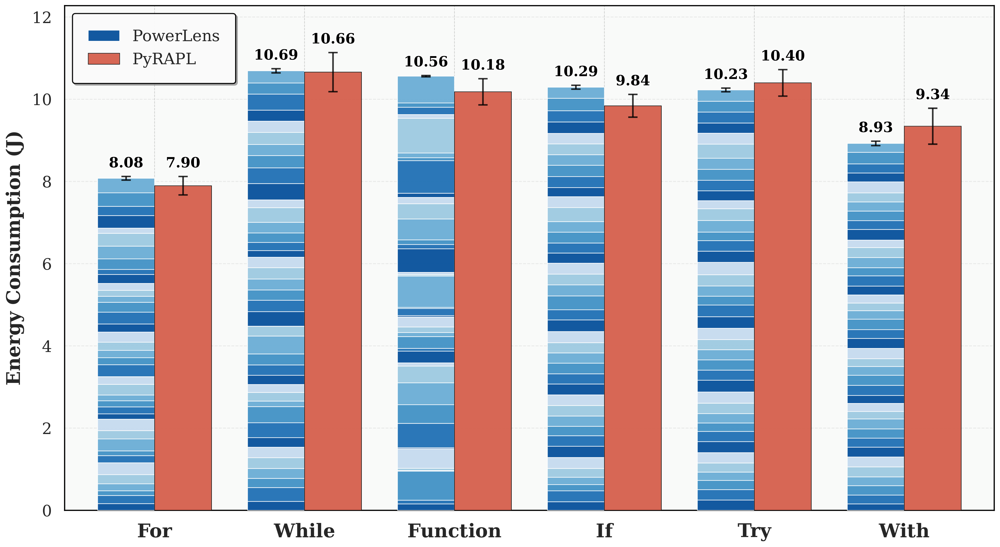
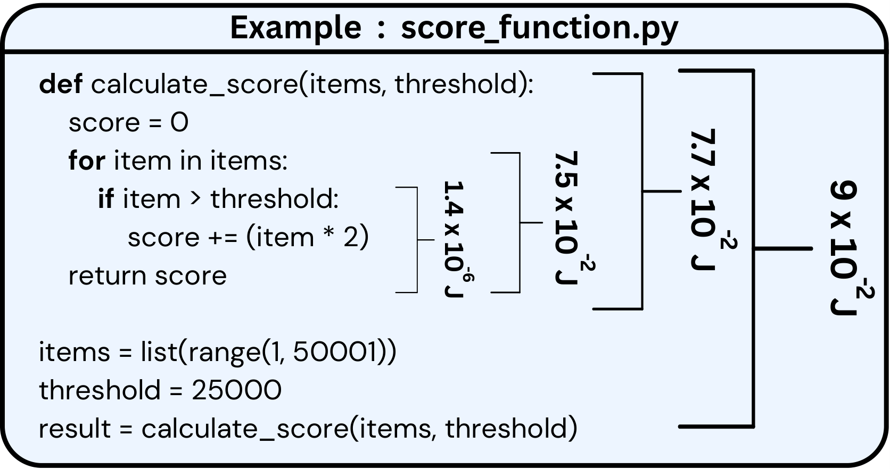
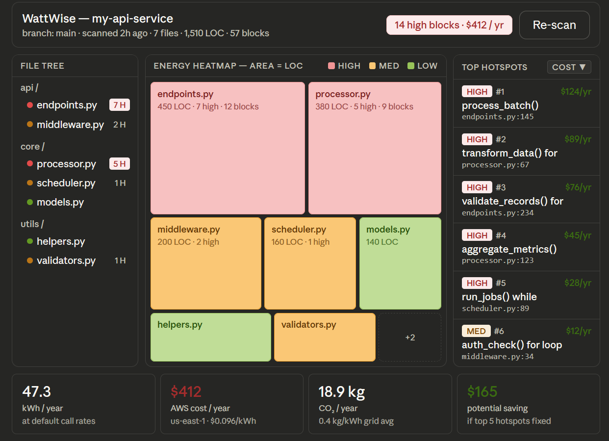

Energy efficiency has emerged as a vital attribute of software quality, with significant implications for both environmental sustainability and operational costs. However, existing profiling tools operate only at runtime and coarse granularity, capturing energy at the process or method level — failing to expose how small code blocks such as functions, loops, and conditionals contribute to energy consumption during development.
To address this gap, we propose EnCoDe, a methodology for fine-grained, design-time energy estimation, with three key contributions: (1) PowerLens — a novel measurement methodology achieving reliable sub-millisecond energy readings for small code blocks; (2) an extensive empirical study on executable code blocks extracted from over 18,000 Python programs, uncovering linear and non-linear relationships between energy and static code features; and (3) predictive modeling achieving R² = 0.75 for regression and 80.6% accuracy for identifying energy hotspots at design time — without execution.
Keywords: Green Software Engineering · Software Sustainability · Design-Time · Energy Estimation · Static Code Analysis
A novel sub-millisecond energy measurement methodology achieving reliable readings for microsecond-scale code blocks through execution amplification, RAPL temporal synchronization, calibrated subtraction, and IQR-based aggregation across 10 trials. Over 90% of blocks show <10% coefficient of variation.
Empirical study on executable code blocks from over 18,000 Python programs, yielding a first-of-its-kind dataset annotated with 33 static AST features. Energy spans six orders of magnitude (2.37×10⁻⁵ J – 7.48×10² J).
Classical ML models trained on static code features achieve R² = 0.755 for continuous energy regression and 80.6% accuracy for Low / Medium / High tier classification — enabling developers to identify energy hotspots early, without running the code.
Intel's Running Average Power Limit (RAPL) is the de facto standard for software-based energy measurement, but its counters update at approximately 1 ms granularity. Individual code blocks — functions, loops, conditionals — execute in microseconds, making them invisible to standard profilers.
As Figure 1 demonstrates, workloads under 1 ms register more than 110% coefficient of variation and 4–5 runs out of 10 return zero readings. This fundamental limitation motivated the development of PowerLens.

Figure 1: Quality of RAPL's Measurements over Execution Time of the Workload (ms, log scale). Workloads under 1 ms show >110% CV and frequent zero readings.
Source code parsed to AST; block-rooting nodes — FunctionDef, For,
While, If, Try, With — extracted as
distinct, hierarchically-aware blocks.
Each block measured using execution amplification (N=1000+), temporal synchronization with RAPL boundaries, calibrated subtraction of loop overhead, and IQR-filtered mean over 10 trials.
33 static AST metrics per block across 7 categories: Basic, Complexity, Density, Diversity, Structural, Code Pattern, and Halstead metrics.
Regression model (Mr) predicts continuous energy in Joules; Classification model (Mc) assigns Low / Medium / High tiers using equal-frequency binning. Stratified 5-fold CV.
New code parsed to AST, features extracted, pre-trained models queried — energy estimate returned in milliseconds without executing any code.

Figure 3: Code Parsing to identify blocks from AST. Source code is parsed to an AST, block-rooting nodes are identified, and each subtree is mapped to a distinct block with contextual hierarchy preserved.

Figure 4: PowerLens — Sub-Millisecond Energy Measurement Methodology. (a) Baseline unmeasurable block; (b) Execution Amplification — block repeated N times to amplify the energy signal above RAPL's threshold; (c) Synchronisation — execution start aligned with RAPL counter refresh cycle; (d) Calibrated Subtraction — pre-measured padding overhead removed. Final energy is the IQR-filtered mean across 10 trials.

Figure 6: Validation — Sum of block-level PowerLens measurements compared against coarse-grained whole-program RAPL readings. For all six block types, the aggregated PowerLens values closely match the PyRAPL baseline, validating the accuracy of the fine-grained methodology while exhibiting substantially lower variance.
Figure 5 illustrates block-level energy measurements for the running example
score_function.py. PowerLens annotates each nested block with its individual
energy consumption in Joules, measured at the FunctionDef, For,
and If levels independently.
The observed energy values span six orders of magnitude (2.37×10⁻⁵ J to 7.48×10² J) across the full dataset — confirming that PowerLens can capture both trivial microsecond-scale constructs and computationally intensive functions within a single unified framework.

Figure 5: Block Level Energy Measurement of the score computation function. Each nested block (FunctionDef, For, If) is individually annotated with its PowerLens-measured energy in Joules.
Top 15 features ranked by three correlation measures (Pearson |r|, Spearman |ρ|, Kendall |τ|) and three model-based importance scores. Bold = linear relationship; italic = non-linear relationship.
| # | Pearson |r| | Spearman |ρ| | Kendall |τ| | Extra Trees | Random Forest | Gradient Boosting | ||||||
|---|---|---|---|---|---|---|---|---|---|---|---|---|
| Feature | Val | Feature | Val | Feature | Val | Feature | Val | Feature | Val | Feature | Val | |
| 1 | operator density | 0.286 | functions count | 0.621 | functions count | 0.507 | operator density | 0.086 | operator density | 0.099 | operator density | 0.102 |
| 2 | operator entropy | 0.205 | node type entropy | 0.294 | node type entropy | 0.193 | loops count | 0.063 | unique node types | 0.075 | program difficulty | 0.056 |
| 3 | conditionals count | 0.181 | conditionals count | 0.229 | conditionals count | 0.178 | functions count | 0.061 | program difficulty | 0.073 | program effort | 0.054 |
| 4 | unique operators | 0.178 | cognitive complexity | 0.225 | cognitive complexity | 0.165 | operator entropy | 0.054 | call density | 0.072 | variable entropy | 0.037 |
| 5 | literal density | 0.174 | nesting complexity | 0.215 | unique functions | 0.165 | variable entropy | 0.054 | variable entropy | 0.061 | loops count | 0.037 |
| 6 | functions count | 0.166 | control flow complexity | 0.210 | nesting complexity | 0.160 | call density | 0.053 | variable density | 0.061 | unique node types | 0.031 |
| 7 | loops count | 0.156 | literal density | 0.207 | control flow complexity | 0.156 | program difficulty | 0.052 | leaves to nodes ratio | 0.053 | call density | 0.022 |
| 8 | variable entropy | 0.145 | unique functions | 0.205 | cyclomatic complexity | 0.150 | depth variance | 0.046 | depth variance | 0.052 | literal density | 0.016 |
| 9 | variable density | 0.144 | cyclomatic complexity | 0.203 | literal density | 0.145 | unique variables | 0.046 | literal density | 0.051 | conditionals count | 0.014 |
| 10 | program difficulty | 0.129 | vocabulary size | 0.199 | vocabulary size | 0.141 | unique node types | 0.043 | program effort | 0.042 | operator entropy | 0.011 |
| 11 | unique variables | 0.122 | operator density | 0.195 | operator density | 0.138 | literal density | 0.042 | operator entropy | 0.037 | leaves to nodes ratio | 0.010 |
| 12 | leaves to nodes ratio | 0.117 | unique node types | 0.191 | call density | 0.133 | conditionals count | 0.036 | unique variables | 0.032 | functions count | 0.010 |
| 13 | depth variance | 0.116 | call density | 0.183 | unique node types | 0.127 | variable density | 0.035 | unique functions | 0.030 | program length | 0.009 |
| 14 | attribute density | 0.080 | program volume | 0.148 | unique variables | 0.110 | unique operators | 0.032 | loops count | 0.030 | depth variance | 0.009 |
| 15 | max branching factor | 0.073 | variable entropy | 0.139 | variable entropy | 0.105 | unique functions | 0.027 | total nodes | 0.028 | unique operators | 0.008 |
Bold = linear relation (appears in Pearson top-10); Italic = non-linear relation.
Table 2 — Regression Models with Log Transform on Target
| Model | Test R² | CV R² (±std) | RMSE | MAE | MAPE | Energy (mJ) |
|---|---|---|---|---|---|---|
| XGBoost | 0.755 | 0.811 ± 0.040 | 0.281 | 0.057 | 172.45 | 15.26 |
| SVR | 0.752 | 0.803 ± 0.039 | 0.283 | 0.091 | 182.27 | 15.47 |
| Gradient Boosting | 0.747 | 0.810 ± 0.040 | 0.286 | 0.058 | 171.83 | 13.56 |
| CatBoost | 0.722 | 0.799 ± 0.043 | 0.300 | 0.058 | 166.35 | 22.97 |
| Random Forest | 0.719 | 0.793 ± 0.047 | 0.302 | 0.060 | 162.83 | 258.01 |
| Extra Trees | 0.682 | 0.737 ± 0.047 | 0.321 | 0.074 | 170.85 | 275.83 |
| Decision Tree | 0.648 | 0.722 ± 0.070 | 0.338 | 0.067 | 170.24 | 14.69 |
| KNN | 0.645 | 0.684 ± 0.081 | 0.340 | 0.066 | 105.78 | 19.59 |
| AdaBoost | 0.633 | 0.757 ± 0.051 | 0.345 | 0.092 | 171.81 | 20.04 |
Shading indicates top two models by each metric. Energy column reports inference cost per prediction (mJ).
Table 3 — Energy Tier Classification Models
| Model | Accuracy | CV Accuracy (±std) | Precision | Recall | F1 | Energy (J) |
|---|---|---|---|---|---|---|
| XGBoost | 0.806 | 0.793 ± 0.007 | 0.804 | 0.806 | 0.805 | 0.022 |
| Random Forest | 0.792 | 0.780 ± 0.007 | 0.789 | 0.792 | 0.789 | 0.373 |
| Gradient Boosting | 0.788 | 0.794 ± 0.008 | 0.788 | 0.788 | 0.788 | 0.015 |
| K-NN | 0.783 | 0.771 ± 0.005 | 0.780 | 0.783 | 0.780 | 0.027 |
| SVM | 0.781 | 0.771 ± 0.009 | 0.780 | 0.781 | 0.778 | 0.022 |
| Extra Trees | 0.769 | 0.765 ± 0.003 | 0.768 | 0.769 | 0.765 | 0.315 |
| Decision Tree | 0.749 | 0.736 ± 0.009 | 0.744 | 0.749 | 0.745 | 0.014 |
| Logistic Regression | 0.735 | 0.726 ± 0.003 | 0.729 | 0.735 | 0.731 | 0.017 |
| SGD Classifier | 0.729 | 0.713 ± 0.005 | 0.722 | 0.729 | 0.721 | 0.022 |
Shading indicates top two models. XGBoost achieves best performance with stable cross-validation across all metrics.
Table 4 — Feature Group Ablations
| Feature Group | Leave-One-Out | Group Only | |||
|---|---|---|---|---|---|
| ΔR² | ΔAcc | #Feat | R² | Acc | |
| Density | −0.002 | −2.8 pp | 5 | 0.700 | 71.1% |
| Counts | −0.011 | −2.6 pp | 8 | 0.720 | 74.2% |
| Halstead | −0.006 | −0.1 pp | 5 | 0.688 | 59.7% |
| Complexity | −0.002 | −0.4 pp | 4 | 0.067 | 51.2% |
| Entropy | +0.001 | −0.1 pp | 3 | 0.691 | 68.3% |
| AST Structural | ~0 | −0.1 pp | 8 | 0.650 | 69.4% |
Leave-One-Out: Δ relative to full 33-feature model (R²=0.755, Acc=80.6%). Group Only: model trained on that group's features alone.
EnCoDe is operationalised as WattWise, a VS Code extension that surfaces design-time energy estimates as inline lint-like annotations — directly inside the developer's editor, with no execution or hardware setup required.

WattWise annotates every analysed block with an energy estimate in Joules and a Low / Medium / High tier — powered by the EnCoDe Gradient Boosting and XGBoost models.
Energy in Joules and tier label shown at the end of every def,
for, while, if, try,
and with block in real time.
Gemini 2.5 Flash explains why a High-energy block is expensive and proposes concrete rewrites — algorithmic improvements, vectorisation, data structure alternatives.
FastAPI + React dashboard scans an entire repository, tracks energy trends over time, and estimates annual electricity cost per block.
Automatically comments energy regressions on pull requests and requests manager approval when configurable cost thresholds are exceeded.